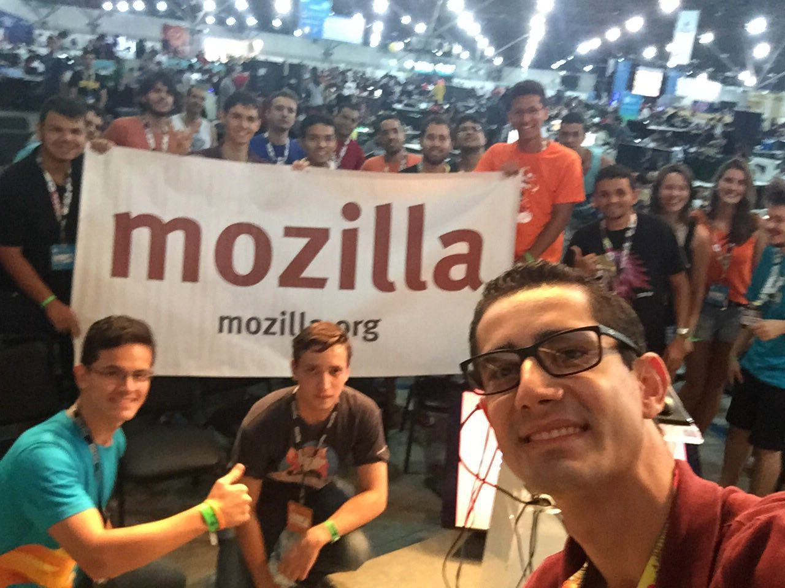

Thiago Policena, Flisol 2016, Anápolis - 16 de Abril de 2016.
Thiago Policena
Técnico em Informática (Instituto Monitor/SP)
Graduado em Redes de Computadores (Anhanguera Educacional/GO)
Bacharelando em Sistemas de Informação (Universidade Estadual de Goiás/GO)
Pós-Graduando MBA em Gestão de T.I
3º Sargento Especialista em Sistemas de Informação (Força Aérea Brasileira)
Mozillian +1
What is Mozilla?
Nossa Missão
É garantir que a internet permaneça um recurso global, aberto e acessível a todos. Uma internet que realmente coloca as pessoas na frente, onde elas podem escolher como utilizá-la e são livres, seguras e independentes.
Nossa História
O Projeto Mozilla nasceu na Netscape em 31 de março de 1998 para oferecer uma alternativa aos usuários e promover inovações na Web.
Orgulhosamente sem fins lucrativos, a Mozilla produz produtos como o Firefox com a missão de manter o poder da Web nas mãos dos usuários, pelo mundo inteiro.
Mais de 10.000 colaboradores expressaram seu apoio à nossa missão pagando por um anúncio de página inteira no New York Times no dia do lançamento do Firefox 1.0 em 2004.
Nossa História
Hoje a Mozilla tem colaboradores em cada continente, incluindo a Antártica (onde o Firefox é usado por 80% da população).
Os complementos do Firefox permitem que você customize e controle sua experiência na Web. Quase 4 bilhões de complementos já foram instalados até agora.
A Mozilla está liderando o caminho da privacidade on-line com inovações como o Não Me Rastreie e o Lightbeam, que dá aos usuários um controle maior sobre seus dados pessoais.
Nossa História
Nossa comunidade mundial ajudou a traduzir o Firefox para 70 idiomas, tornando nosso navegador disponível para mais de 90% da população mundial.
Em 2008, 8.002.530 pessoas escolheram o Firefox em um único dia para estabelecer um recorde mundial no Guinness por “Mais downloads de um software em 24 horas”.
O Mozilla Festival é o nosso maior evento anual, unindo centenas de mentes criativas para tornar real o verdadeiro poder e potencial da Web.
Nossa História
O Mozilla Webmaker trabalha para criar um planeta mais familiarizado com a Web, fornecendo ferramentas e projetos para ajudar as pessoas a assumirem o controle de suas vidas on-line.
O Firefox para Android traz a mesma experiência de navegação do computador para telefones e tablets. Disponível no Google Play, já foi baixado mais de 80 milhões de vezes.
O Mozilla Developer Network é um recurso mantido pela comunidade que oferece a melhor fonte de documentação, tutoriais e ferramentas disponíveis para mais de 2 milhões de visitantes por mês.
Nossa História
A Mozilla trabalha para cuidar e preservar a Web como um recurso público para o benefício de todos.
Em 2013, a Mozilla lançou o Firefox OS para libertar a força da Web em smartphones e trazer, novamente, o poder de escolha para as pessoas que estão ficando online através de seus celulares.
O trabalho da Mozilla torna-se viável graças aos milhares de voluntários que, assim como a gente, acreditam que a Web deve permanecer aberta e livre para todos.